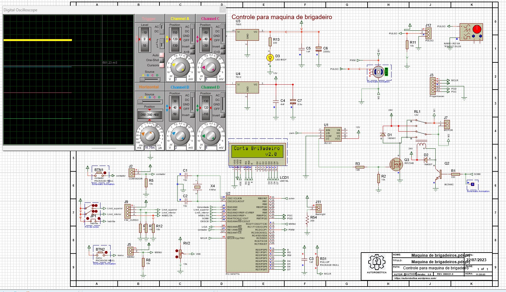
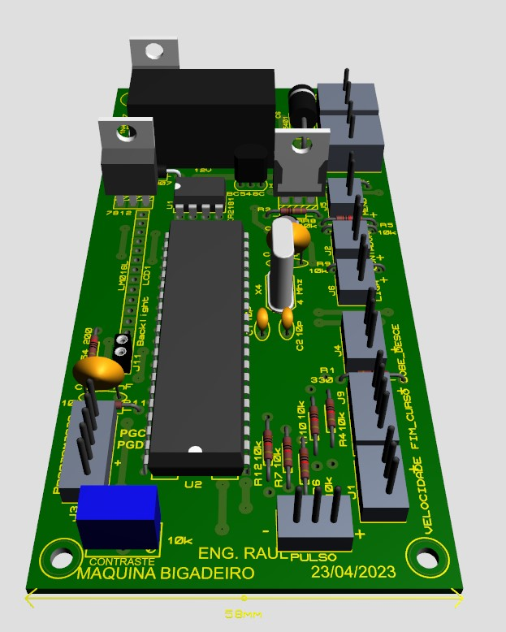
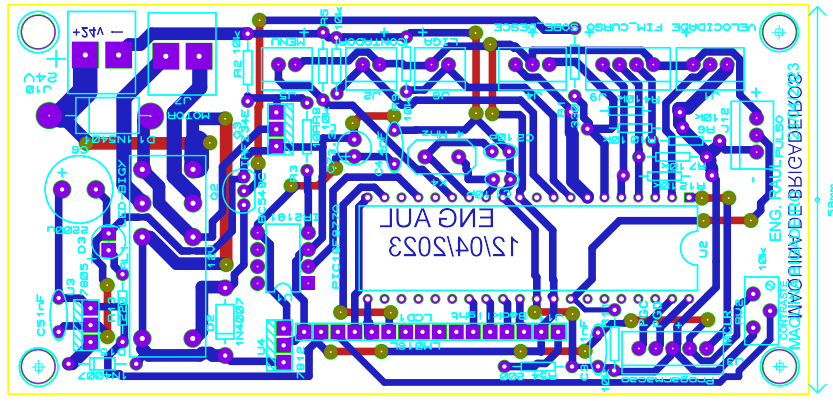
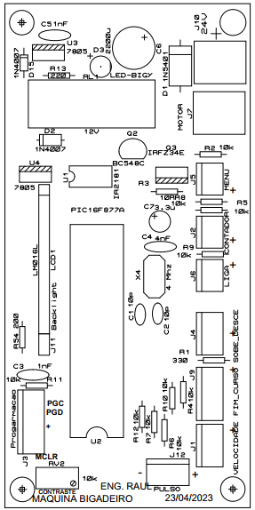

Sobre o Projeto
Projeto de adaptação de uma máquina de fabricação de salgados e doces, com foco na produção automatizada de brigadeiros padronizados por peso.
O sistema realiza a dosagem precisa da massa permitindo controlar individualmente o peso de cada brigadeiro, aumentando a produtividade e reduzindo desperdícios.
Vídeo do Projeto
Demonstração do funcionamento do protótipo:
Principais Recursos
- Controle automático da dosagem
- Padronização do peso dos brigadeiros
- Sistema embarcado dedicado
- Interface eletrônica de controle
- Ajuste fino de parâmetros de produção
- Projeto mecânico e eletrônico integrado
Hardware Utilizado
- Microcontrolador PIC18F887
- Circuito eletrônico desenvolvido em PCI
- Sensores e atuadores
- Sistema de acionamento da máquina adaptada
Firmware
O firmware foi desenvolvido em linguagem C utilizando a IDE CCS Compiler.
- Controle do processo de dosagem
- Leitura de sensores
- Controle de motores e atuadores
- Ajuste e monitoramento do peso
- Automação do ciclo de produção
Simulação do Projeto

Placa Desenvolvida

Layout da PCI

Footprints Utilizados

Diagrama Elétrico

Vídeo - Teste de Redução
Vídeo - Ajustes do Sistema
Tecnologias Utilizadas
- Linguagem C
- CCS C Compiler
- PIC18F887
- Eletrônica embarcada
- Automação industrial